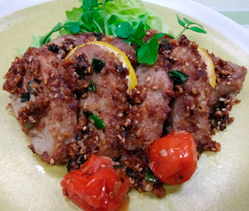

豚肉のグリルとニラのマスタードソース
- 調理時間：80分
- （一人当たり）
- カロリー：538kcal
- たんぱく質：30.0g
- 脂質：38.4g
- 炭水化物：14.5g
- 塩分：1.9g


＜2人分＞
- 豚ロース肉（とんかつ用）
- 200～300ｇ
- 塩、コショウ
- 少々
- ミニトマト
- 4個
- レモン（輪切り）
- 2枚
- ニラ
- 1/4束
- 植物油
- 少々
- ベビーリーフ（飾り用）
- 適宜
- ・パン粉
- 大さじ4
- ・粒マスタード
- 小さじ2
- ・ゴマ
- 小さじ2
- ・ショウガ（すりおろし）
- 少々
- ・醤油
- 少々
A


- 豚肉に塩、コショウで下味をつける。
ニラは小口切りにする。 - 大きめにアルミホイルを切り、豚肉をのせ、ミニトマト、レモンの輪切りをのせて包む。
200℃のオーブンで40分位焼く。（大きさによって火の通りが違うので時間は調節する） - <マスタードパン粉をつくる>
ボウルにAの材料を合わせておく。 - フライパンを熱し、少量の植物油をひき、②の豚肉に入れる。
③のマスタードパン粉を加えて絡めながら、焼き色をつける。 - 仕上げにニラを加え、火が通れば完成。
切り分けてお皿に盛り付けベビーリーフを飾る。
豚肉のグリルとニラのマスタードソース
とんかつ、ハンバーグ、生姜焼きなど、日本の家庭料理には多くの豚肉料理が挙げられます。それもそのはず、日本人が最も食べている肉は豚肉で、食肉のなかでは半分近くの割合を占めています。豚肉の部位表示は、農林水産省が定めた基準により、7部位に統一されています。部位によって、かたさ、赤身と脂肪の割合、きめが違うので、特徴にあった調理をすることがおいしく食べるポイントです。